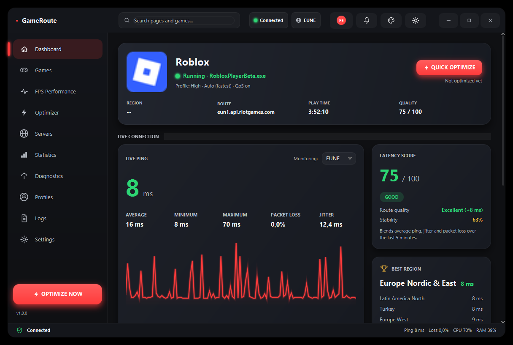
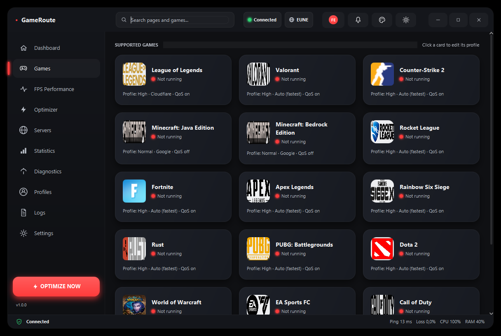
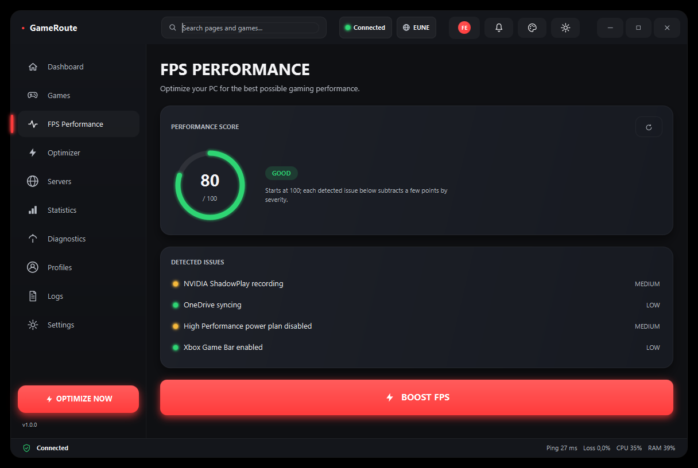
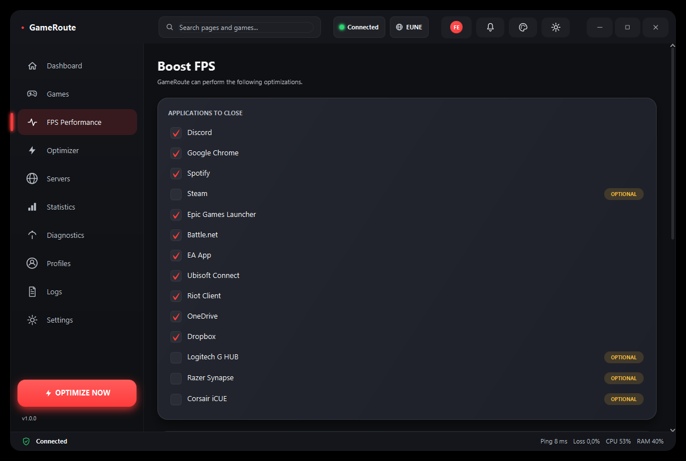
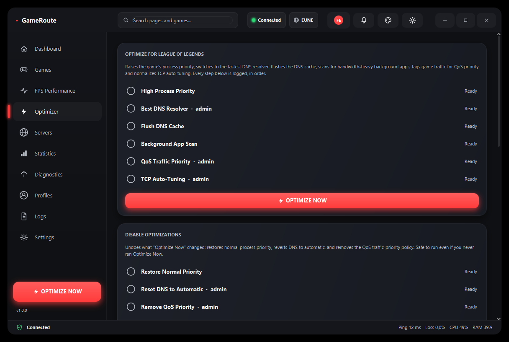
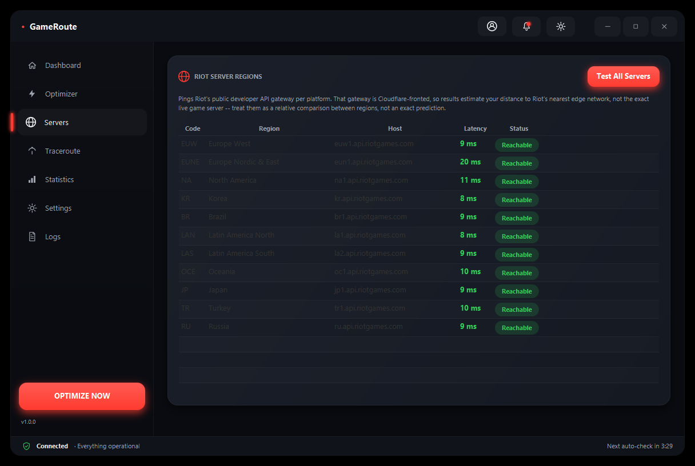
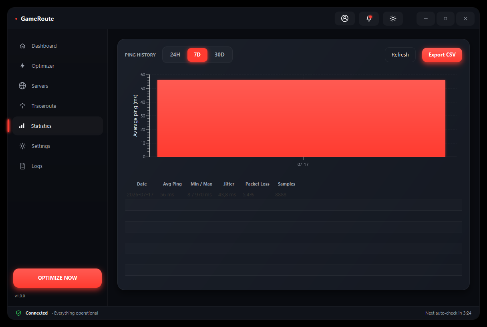
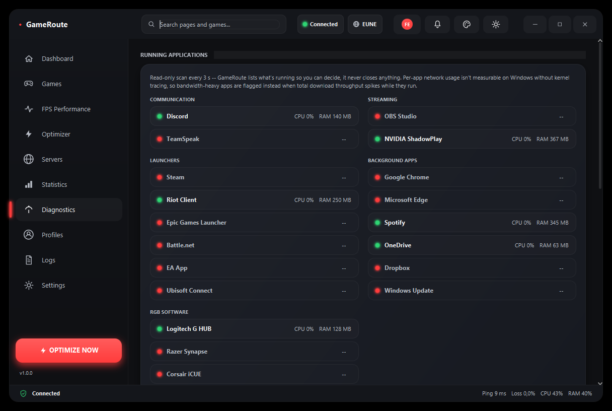
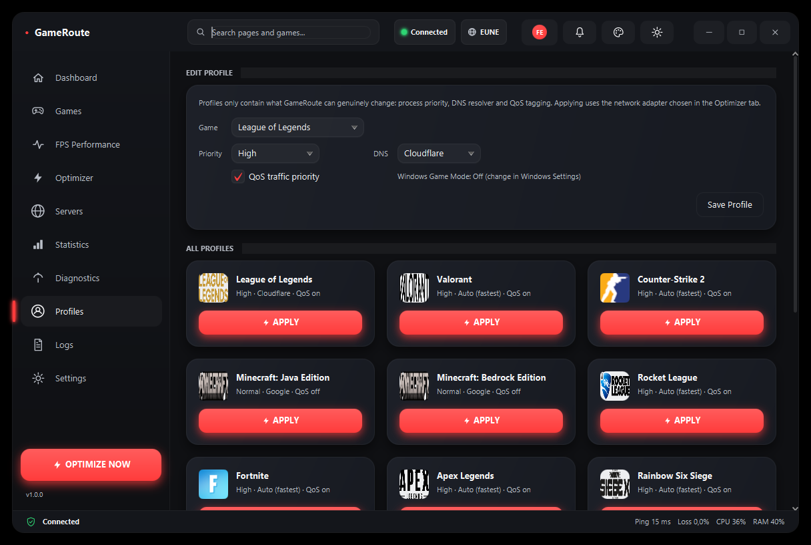
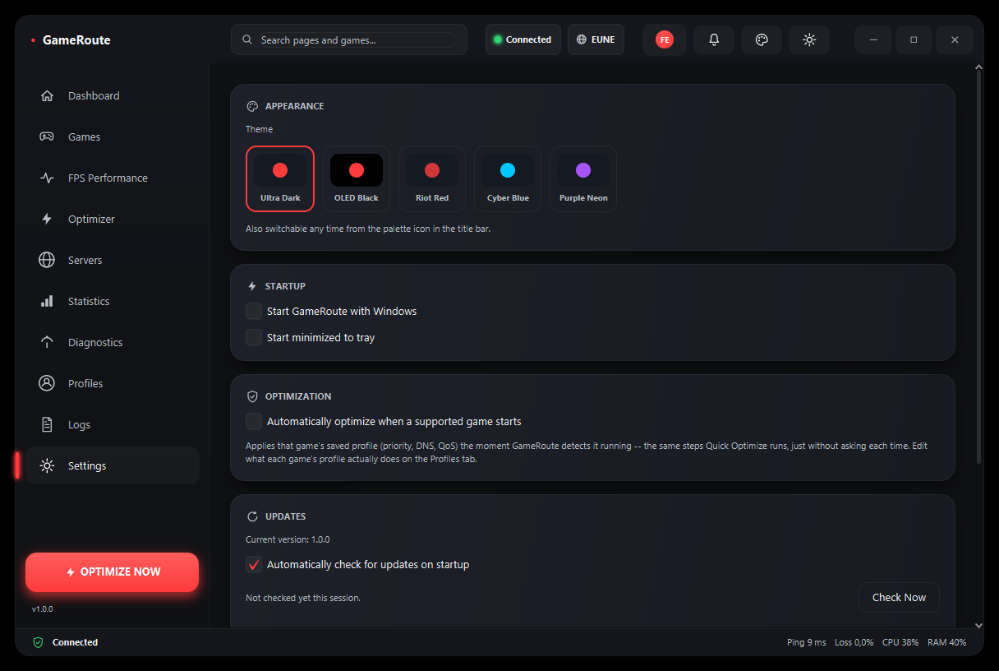

Lower Ping. Higher FPS. Every Game.
GameRoute monitors your connection hop-by-hop, scores your PC's gaming performance, and applies safe, confirmation-gated Windows optimizations the moment it detects League of Legends, Valorant, CS2, Fortnite, Apex and 13 other games running.
- No VPN
- No Traffic Rerouting
- 100% Local
- No Data Collection
- Safe & User-Controlled
Java 21 included in the installer · No separate setup required

0
Games Auto-Detected
0
Telemetry Sent Without Consent
0
Confirmation-Gated Optimizations
0
Local & Open to Inspect
Every tool you need to play at your best
Real diagnostics and real, local optimizations — nothing here pretends to be more than it is.
FPS Performance Boost
Scores your PC's gaming readiness out of 100 from real, explainable checks (power plan, Xbox Game Bar, background apps, startup load), then applies your choice of fixes from a fully disclosed, individually toggleable checklist — nothing closes or changes without you checking the box first.
18-Game Auto-Detection
Recognizes League of Legends, Valorant, CS2, Fortnite, Apex Legends, Rainbow Six Siege, Rust, PUBG, Dota 2, World of Warcraft, EA Sports FC, Call of Duty, Minecraft, Overwatch 2, Rocket League, Roblox and GTA V the moment they launch — with a real extracted or downloaded icon for each.
Live Ping
Real-time latency monitoring to your active game's servers, once a second, with a glowing history graph.
Jitter & Packet Loss
Rolling-window jitter and packet-loss figures computed from real probes, not estimates.
Traceroute
Hop-by-hop route analysis that flags abnormal latency jumps and detects when your path changes.
DNS Optimizer
Measures Cloudflare, Google, Quad9 and OpenDNS, and switches to whichever answers fastest — reversible in one click.
QoS & Process Priority
Tags your game's traffic for Windows QoS (DSCP) priority and raises its process priority / CPU core affinity — real OS features, honestly scoped to your own PC and network.
Per-Game Profiles
Save a priority / DNS / QoS profile for each game and apply it in one click from the Games or Profiles tab — or let Auto-Optimize apply it the instant that game is detected running.
Multi-Provider Servers
Live-ranked latency across all 11 Riot regions and 5 Battle.net regions, so you always know which is fastest from where you are right now.
Statistics
Daily, weekly and monthly ping/jitter/packet-loss trends, stored locally, with one-click CSV export.
Diagnostics
Read-only view of every relevant running app — voice chat, launchers, streaming tools, RGB software — flagging the ones spiking your bandwidth while you play. GameRoute never closes anything here; it only lists.
5 Themes
Ultra Dark, OLED Black, Riot Red, Cyber Blue and Purple Neon — switch anytime from the title bar.
Built-In Auto-Updater
Checks GitHub Releases on startup and lets you review release notes and install the latest version in one click — nothing downloads or installs without your confirmation.
Logs
Every action GameRoute takes is logged, in-app, in plain text — nothing happens off the record.
18 games, detected automatically
Launch any of them and GameRoute picks it up instantly — no manual setup, no game-specific config.

League of Legends · Valorant · Counter-Strike 2 · Minecraft (Java & Bedrock) · Rocket League · Fortnite · Apex Legends · Rainbow Six Siege · Rust · PUBG: Battlegrounds · Dota 2 · World of Warcraft · EA Sports FC · Call of Duty · Overwatch 2 · Roblox · GTA V
Detection reads process names and public config files only — no memory reading, no game hooks. Game names are trademarks of their respective owners; GameRoute is not affiliated with or endorsed by any of them.
Boost FPS with one button — and full disclosure
A real 0–100 performance score from explainable checks, and a checklist you control line by line.


Real Detection
Power plan, Xbox Game Bar, Game DVR, Discord overlay, Steam downloads and startup load are all read from their real Windows/registry/config sources — never guessed.
Opt-In App Closing
GameRoute's one deliberate exception to "never closes anything": Boost FPS can close resource-heavy apps, but only the ones you leave checked, and only after this exact screen.
Verified Result
After boosting, the same analyzer runs again for a genuine before/after score — not a canned animation.
One dashboard, everything that matters
Real screenshots from the actual app — nothing staged.
Instant Detection
Knows the moment any of its 18 games launches, with its own icon and quick-optimize button — no hooks, no memory reading.
Latency Score
Average ping, jitter and packet loss blended into one live score over the last 5 minutes, so you know at a glance if now is a good time to queue.
Best Region
Every region for your game's provider ranked by measured latency from where you actually are, refreshed automatically.
How GameRoute actually works
No marketing fog. Here's exactly what happens, and what doesn't.
Ping
GameRoute runs Windows' own ping once a second against your detected game's own regional endpoints and parses the real round-trip time — the same tool you could run yourself in a terminal.
Traceroute
Runs tracert to show every hop between you and the server, highlighting the ones with abnormal latency jumps or timeouts.
DNS
Measures a handful of public resolvers (Cloudflare, Google, Quad9, OpenDNS) and lets you switch to the fastest one for your connection — a standard Windows network setting, changed with your explicit confirmation.
QoS & Process Priority
Creates a real Windows QoS policy (DSCP tagging) for your game's traffic and raises its OS scheduling priority. Both only affect your machine and your own router — no effect on the internet path beyond your network, and both reversible in one click.
FPS Performance
Reads your power plan, Xbox Game Bar/DVR state, background apps and startup load to compute a real 0–100 score, then lets you apply fixes from a fully disclosed, per-item checklist — including the one place GameRoute will close an app, and only ones you leave checked.
What GameRoute will never do
-
No VPN. GameRoute never creates a virtual network adapter or tunnels your traffic anywhere.
-
No traffic rerouting. Every packet your game sends still goes exactly where your ISP would normally send it.
-
No private backbone. GameRoute doesn't operate (or claim to operate) a relay network. That's genuinely different infrastructure that a local Windows utility can't replicate — so we don't pretend to.
-
No silent changes. Every optimization is behind its own confirmation dialog that states exactly what it will change, before it changes it.
-
No unrequested app closing. The Boost FPS checklist can close apps you pick, but only ones you leave checked on a screen that lists them by name first — every other tab in GameRoute is read-only.
GameRoute vs. ExitLag
Different tools for a different job — see for yourself which one you actually need.
| Capability | GameRoute | ExitLag |
|---|---|---|
| Ping Monitoring | ✅ | ✅ |
| Traceroute | ✅ | – |
| DNS Tools | ✅ | – |
| QoS Tagging | ✅ | – |
| FPS / Performance Boost | ✅ | – |
| 18-Game Auto-Detection | ✅ | – |
| Statistics & History | ✅ | ✅ |
| Local Windows Optimizations | ✅ | – |
| VPN / Virtual Adapter | ❌ | ✅ |
| Traffic Rerouting | ❌ | ✅ |
| Private Relay Network | ❌ | ✅ |
ExitLag column reflects their publicly advertised core features as of 2026, for general orientation only — not an exhaustive or verified audit, and not sponsored or endorsed by ExitLag. GameRoute doesn't offer VPN/rerouting/relay by design, not as a missing feature — see How It Works.
Every tab, at a glance
Real screenshots from the actual app, plus one illustrative mockup matching its exact look.


| Hop | Host | Avg | Status |
|---|---|---|---|
| 1 | router.local | 2 ms | OK |
| 4 | isp-edge-1.example.net | 9 ms | OK |
| 9 | core-transit.example.net | 86 ms | Slow |
| 12 | euw1.api.riotgames.com | 21 ms | OK |




Ready when you are
One installer. No separate Java download. Auto-updates in place when a new version ships. Uninstall cleanly whenever you want, straight from Windows.
By downloading you agree this is an unofficial, independent tool — not affiliated with Riot Games, Valve, Epic Games, or any other publisher of the games it supports. See FAQ.
Frequently asked questions
GameRoute never reads or modifies any game's memory, files, or network traffic, and doesn't hook into any game process. It only uses standard Windows features (ping, tracert, DNS settings, QoS, process priority, power plan, registry toggles) that any user could apply manually through Windows' own tools. That said, GameRoute isn't made or reviewed by Riot Games, Valve, Epic Games, or any other publisher, so we can't speak for their official stance — if you're risk-averse, stick to read-only features (ping, traceroute, statistics, diagnostics) and skip the optimizer and FPS Boost actions.
No. This is the one thing GameRoute is most explicit about: it does not create a VPN, does not tunnel traffic, and does not route your packets through any third-party server. Your traffic takes exactly the same path your ISP would normally send it on. GameRoute only measures that path (ping, traceroute) and adjusts local Windows settings (DNS server choice, QoS tagging, process priority).
GameRoute runs as an ordinary, independent user-mode application — it doesn't inject code into any game, load a kernel driver, or interact with Riot Vanguard, Easy Anti-Cheat, or BattlEye in any way. It runs entirely separately, the same way a ping utility or Task Manager would. We don't control those anti-cheat systems' behavior, though, so we can't officially guarantee compatibility with every one of them — if anything ever looks off, close GameRoute and report it on GitHub.
The FPS Performance tab can help, honestly scoped: it reduces CPU/background contention by switching to the High Performance power plan, freeing standby memory, disabling Xbox Game Bar/Game DVR recording, clearing temp files, and optionally closing apps you choose — real fixes for a genuinely loaded system. What it doesn't do is hook into DirectX/OpenGL to read or modify actual rendered frame rate (the way tools like RivaTuner Statistics Server do) — so if your bottleneck is your GPU or in-game settings rather than background load, this won't move the needle. The before/after Performance Score is recomputed for real after boosting, not a canned animation.
The installer does, since it writes to C:\Program Files. Running GameRoute day-to-day doesn't. A few specific actions (QoS policy, DNS changes, TCP auto-tuning, pausing Windows Update, flushing standby memory) need an elevated process to actually apply — if you're not running as admin, those simply report a clear failure in the Action Log instead of silently doing nothing. Ping, traceroute, statistics, diagnostics, and process-priority changes all work without elevation.
No. Tapping "Boost FPS" opens a checklist naming every app it would close and every Windows setting it would change, each with its own checkbox — some (Discord, Chrome, Spotify) checked by default, others (Steam, RGB software) left unchecked as optional. Nothing runs until you review that list and confirm. Uncheck anything you don't want touched.
It's an opt-in Settings toggle that applies your saved per-game profile (priority, DNS, QoS) automatically the instant that game is detected running, instead of you clicking Quick Optimize yourself each time. It's off by default and only runs the exact steps already defined in your Profiles tab — it doesn't add new actions or run the Boost FPS app-closing checklist.
Your data stays on your PC, by default
GameRoute was built by someone who was tired of "optimization" tools that quietly phone home. This one only ever does if you flip the switch yourself.
-
Everything stays on your PC
Settings, ping history and logs are stored under
%USERPROFILE%\.gameroute— plain files you can open, back up, or delete yourself. -
Telemetry is opt-in, off by default
Leave it off and nothing is ever sent. Turn it on in Settings and GameRoute sends a random install id and version number — so the developer can see a rough usage count — nothing personal, no crash reports, no usage patterns. No other version of the app phones home.
-
No account required
Nothing to sign up for, no email, no login screen. Install it and it works. Connecting a Discord account is entirely optional and only ever changes what's shown in the title bar.
-
No hidden data collection
Every network call GameRoute makes by default is a diagnostic itself (ping/traceroute/DNS to public endpoints) — the feature is the traffic, not a side channel. Every opt-in exception (below) is disclosed here and behind its own toggle, never bundled into anything else.
-
Discord identity sharing is a separate opt-in
If you connect Discord, a second, independent toggle in Settings lets you additionally share your Discord id/username/avatar so the GameRoute server's Owner/Administrator/Moderator can see who currently has GameRoute connected. Off by default; turning it off stops it immediately.